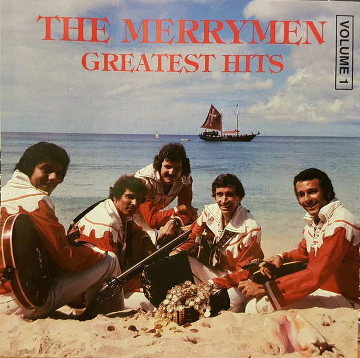

CD
Greatest Hits Volume 1
The Merrymen
Media: — · Sleeve: —
—
Personal
Discogs SuggestedCA$65.37
Discogs MedianCA$65.37
Discogs HighCA$65.37
- Physical Copy ID
- BB-CD-2052
- Year
- 1992
- Label
- Merry Disc
- Catalog #
- MM CD 1047
- Country
- Barbados
- Genre / Style
- Folk, World, & Country · Calypso